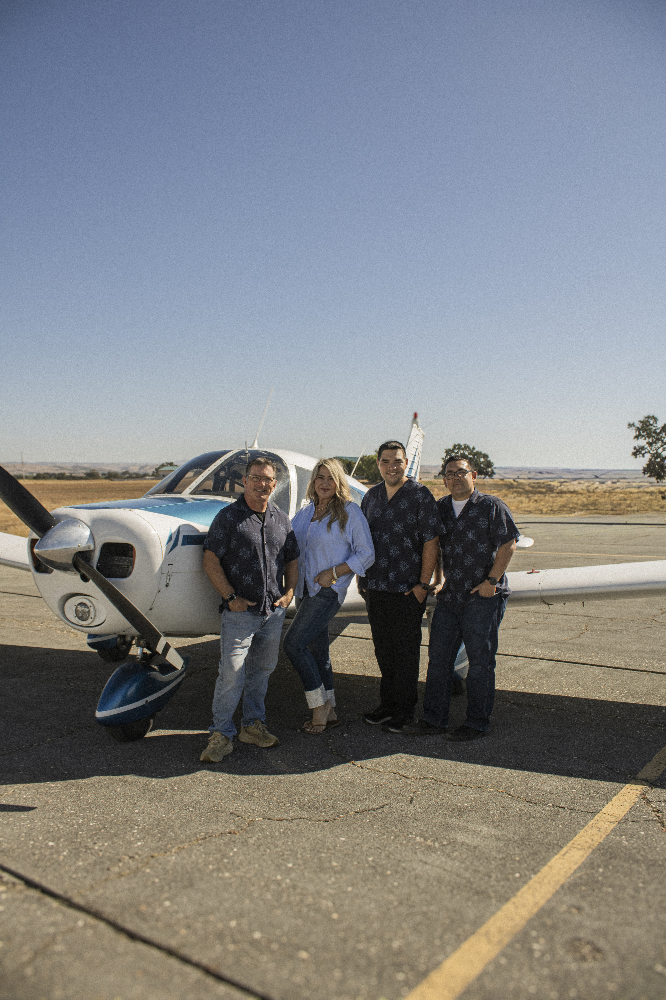
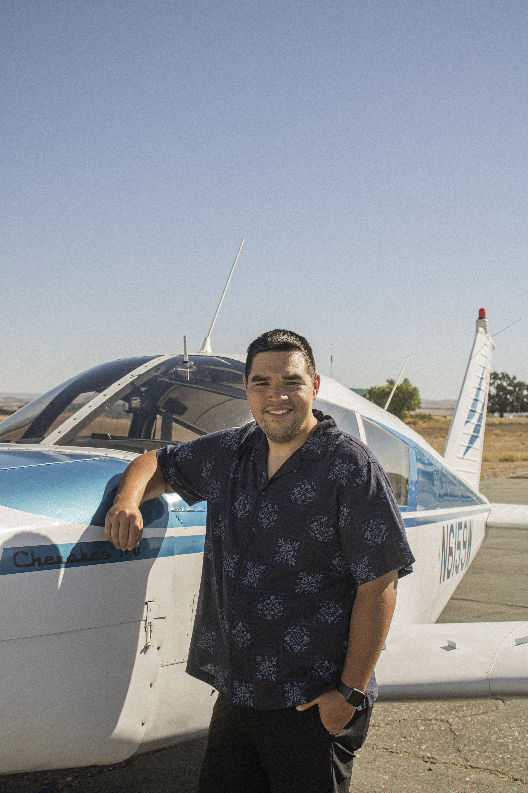
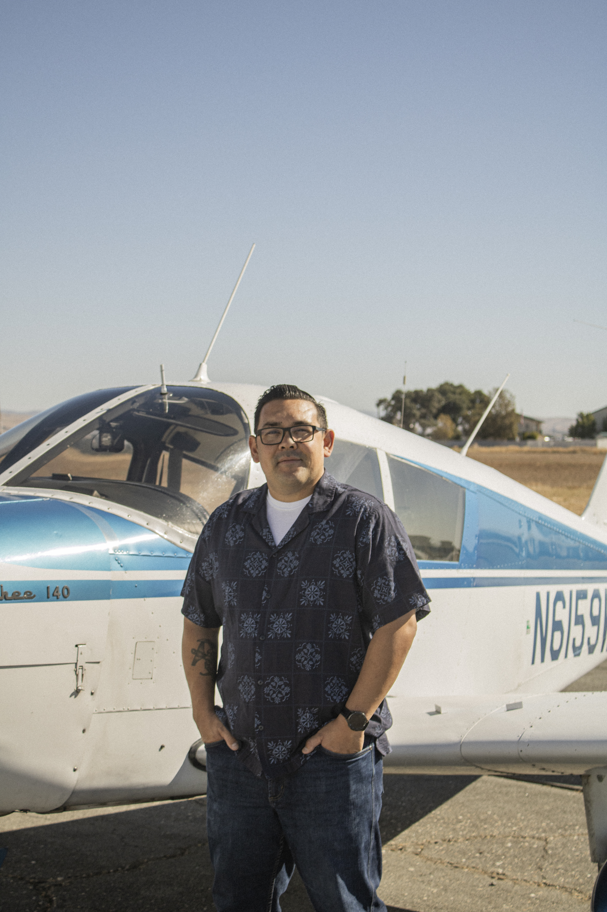
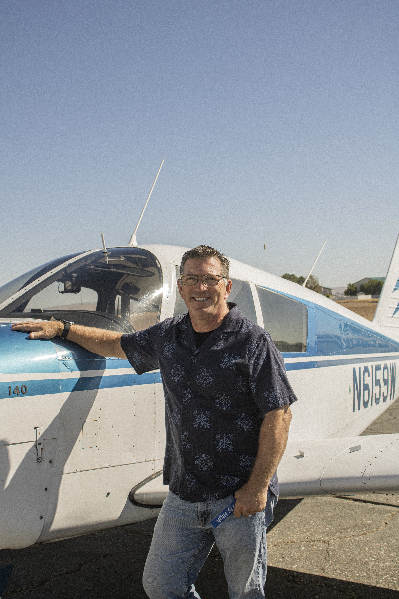

Our Instructors
Meet the people
you’ll fly with.
Get to know Gabe, Thomas, and Robert — the instructors bringing their own experience, perspective, and approach to flight training at Fly High.


Gabe
Flight Instructor
Gabe’s interest in aviation started when he was young. His grandmother lived near the San Luis Obispo airport, where he would watch airplanes take off and land from her house. He knew early on that aviation was something he wanted to pursue.
His long-term goal is to become an airline pilot, and working toward his commercial pilot’s license has been an important part of that path. Along the way, Gabe has learned how much persistence matters. Setbacks during training pushed him to identify what needed improvement, work on it, and keep moving forward.
One of his favorite parts of flying is the stillness of being in the air and the perspective that comes with seeing the world from a small aircraft.
As an instructor, Gabe especially enjoys seeing the moment when a maneuver or approach finally clicks for a student. He hopes the people he trains leave with both a greater appreciation for aviation and a strong commitment to safety.
Some of his favorite aviation memories come from building hours for his commercial license, flying throughout California with people who shared the same interest in aviation and exploring new places along the way.

Thomas
Flight Instructor
Thomas grew up interested in machines and figuring out how things work. Aviation brought that mechanical curiosity together with the discipline and preparation required to become a pilot.
He decided to pursue his commercial pilot’s license so he could turn flying into a career rather than keeping it only as a hobby. For Thomas, one of the most rewarding parts of training is watching something difficult become second nature through practice.
His experience in both aviation and the Marine Corps has reinforced the value of preparation. He believes good training helps pilots respond calmly under pressure instead of simply reacting.
As an instructor, Thomas enjoys seeing students reach the point where they stop fighting the airplane and begin flying it with confidence. His goal is to teach more than what is required to pass a checkride. He wants students to develop the judgment and discipline needed to make good decisions long after training is finished.
One flight he especially remembers is his first solo cross-country from San Luis Obispo to Salinas. It was the flight where the stress of learning began to lift and he was able to simply enjoy the freedom, views, and quiet of flying on his own.

Robert
Flight Instructor
Robert has been flying since 1997, when an introductory flight with his eighth-grade history teacher first introduced him to aviation.
Since then, he has logged more than 7,000 hours during his aviation career. Robert is a retired California Highway Patrol fixed-wing pilot and also works with helicopter students through Del Rio Aviation.
What continues to interest him about aviation is the constant challenge. Flying requires discipline, procedures, awareness, and the ability to keep learning throughout a pilot’s career.
One of the most rewarding parts of Robert’s experience has been teaching others and traveling throughout the United States, meeting people along the way.
As an instructor, he focuses on helping students build long-term confidence, experience, and an understanding of aviation safety. He enjoys sharing what he has learned over his career and helping new pilots develop the knowledge and skills they can carry with them for years to come.
And one thing students may not expect from someone with more than 7,000 hours in the air: Robert is afraid of heights.